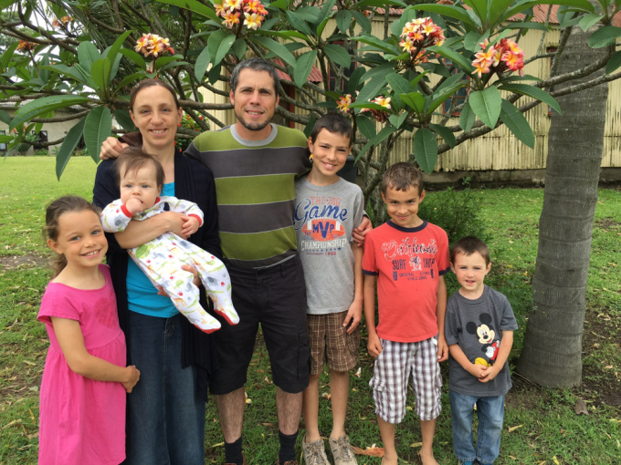
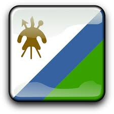

Foster Lesotho Project
⟩
Initiate Core Ministry (Bible Class/ Classes)
⟩
Establish approach
(from a spiritual / biblical vantage)
⟩
Find base curriculum
⟩
⌞
Shenandoah Bible Institute
Authorize Curriculum Modifications
⟩
Complete Modifications
⟩
Image changes
Local language enhancements
⌞
Shenandoah Bible Institute Link
"I came across Mr. Vogan in about 2004, and was very excited to see he has been developing these materials in the interim"
Finalize curriculum review
Shenandoah Bible Institute
(Dr. Charles Vogan)
⟩
evangelical and biblically inductive, avoids denominationally-linked language, simple and unoriginal
Serves dual purpose
⟩
Gospel witness
Equipping the saints
'Organic' approach Bible survey
(a.k.a connectivity of the overall story of Scripture)
⟩
Excellent base for more advanced expositional / inductive studies
A well-designed / balanced video media
Secure teaching venue
⟩
'Independent' or 'church' venue(s)?
Khubetsoana community centre?
Mahon Evangelical Church branches; Mamenoaneng baptist church?
Establish ministry partner in case of independent venue
⟩
Kgotso Mashongoane (when available, depending on his timing for being in or out of Lesotho)
Secure necessary technology for video and audio projection
Determine advisability of a legal structure in the medium / long term
Language learning
⟩
Secure language tutor
⟩
Speak to Glenn Gault (Maseru) before 2019
Brainstorm immersion techniques
Print written curriculum / materials
Family Logistics
⟩
Renew necessary passports
Vehicle for transportation
Visa Approach
⟩
Republic of South Africa
Lesotho
Access to necessities
Access to medical facilities
Housing
Access to finance
Communications
Church Support
⟩
Establish lines of communication
Migrate towards a balanced financial paradigm
created with
www.bubbl.us